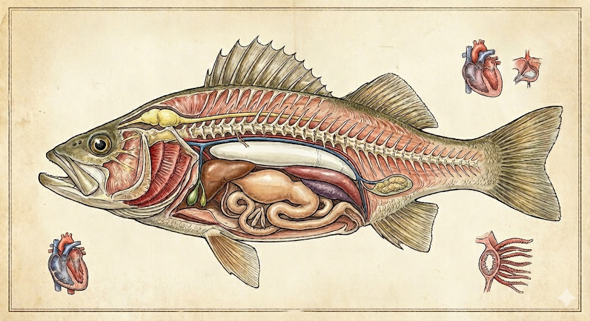

【海水魚の病気】第２回：
なぜ誤診が繰り返されるのか？―疾患の多様性と医療リテラシー
Published: 2026.04.16
前回は魚の感染症の治療の壁となる法規の構造の問題を取り上げました。
今回はちょっと視点を変えて、
魚類の様々な疾病について、マリンアクア界での対処法などの切り口から話を掘り下げていきたいと思います。
「病気じゃないのに死んだ」という言葉をよく耳にします。
ここでいう病気とは、「体表に異常が出る疾患がなかった」という意味で使われている場合が多いかと思われますが、
しかし、魚類が死んだ場合は事故でない限り必ず何らかの“疾病や病態”が背景にあるはずです。
ネット上でよく見かける「死因？」「治療？」に関する事例を織り交ぜて
何故いろいろな誤解が広まっていくのか、その原因を探りながら
実際の魚類の身体の構造や疾病の多様性のお話をしていきたいと思います。
１．なぜ誤診断・誤治療が起きるのか
■「魚が糞詰まりで死んだ」
ネット上で「魚が糞詰まりで死んだ」という投稿をよく見かけますが、
見かけるたびに何を基準に「糞詰まりと診断したのか？」とても気になります。
人が腸閉塞で亡くなっても目視で診断出来るんでしょうか？
出来ませんね。
人の医療でも病態を特定するには、
例えば腸閉塞であればレントゲン、CTスキャン、造影検査、内視鏡、カテーテルなど、
複数の検査を組み合わせて総合的に判断します。
また、人の死因ですら、司法解剖を行わなければ正確な特定は困難です。
魚も同じです。
魚類は高等な脊椎動物であり、複雑な臓器・神経・内分泌系を持っています。
それぞれの働きは、人のそれとほぼ同じ仕組みで成り立っていると言われています。
ですので、専門知識を持った獣医師であっても、外見や行動の観察だけで正確な診断を下すことは不可能だと思われます。
※糞詰まりについて、何故誤診と推定できるのか「第２章の■糞詰まりが死因かについての考察」でお話いたします。
■とりあえず淡水浴
そして治療法としてもっとも目にするのが「淡水浴」です。
「糞詰まりの治療法」とセットで見かける事もありますし
その他には「白点病」「リムフォ」etc
はては「なんとなく元気がないので」とりあえずやってみたという投稿。
近年、特に見かけることが多くなった気がしたので、先日ＡＩに手伝ってもらってTwitterで１日に何件くらい「淡水浴」に関する投稿があるか調べてもらいました。
私が思っていた以上に多く１日に数件～１０件以上という結果でした（汗
そしてSNSの普及とともに、投稿の数は年々増加しており、特にここ5〜6年で顕著に多くなっている傾向を確認できました。
治療法としての淡水浴についてですが
水産学・魚病学の世界では「淡水浴は一部の外部寄生虫（ハダムシなど）の駆除に有効とされています」
一方で浸透圧ショック・粘液が落ちるなど、魚体にダメージを与えることが知られており、養殖現場では、このようなリスクを十分に考慮し、メリットがリスクを上回る場合のみ慎重に行うことが推奨されています。
当然ですが、便秘に対して淡水浴が効くというエビデンスも科学的には１件も見つかりませんでした。
ちなみに白点病に関しては魚の体表面から離脱直前のトロフォントには効く可能性がありますが、皮下に白点虫がもぐり込んでる間は無効です。
つまり１度の淡水浴では表面的に白点が落ちたように見えるだけで治療とは言い難い状態です。
またリムフォは病原体がウイルスで、細胞内に侵入して増殖するので、淡水に浸潤させたところで当然ウイルスは死にません。
ですので治療としては無効と思って差し支えないと思います。
つまり、アクアリウムで行われている安易な淡水浴は意図した治療効果は得られず、魚の体力や防御力をかえって奪う行為になり、弱った魚に施すと最後のとどめを刺すことになりかねません。
その背景には、淡水浴が低侵襲な処置であるかのような誤解があるのかもしれません。
慎重に判断したいところです。
そんな訳で私はかれこれ８年以上前から淡水浴は行わなくなりました。
蛇口をひねったらほぼタダで手軽に手に入る「淡水」に頼りたくなる気持ちも分かりますが、海水魚に対する淡水浴は頻繁に行って良いような、安全な万能薬ではないのが現実です。
では何故こんなにも「海水魚の糞詰まり」「淡水浴」が一般アクアリストの間に広まってしまったのでしょう？
中には医療従事者で疾病に詳しいはずの方や、プロショップでのやり取りの中でも「糞詰まりみたいだから、淡水浴してみた」という表現を耳にすることがあります。
それは魚類を
「口と腸と肛門しかない直腸動物のような単純な構造の生き物」
と無意識のうちに線引きしてしまっているからではないでしょうか。
その結果、魚の疾病と言えば「糞詰まり」、治療と言えば「淡水浴」という、短絡的で限られた選択肢しか思い浮かばなくなるのではないかと推察しています。
糞詰まりや淡水浴の誤情報はほんの一例に過ぎませんが、
真偽を確かめず 「みんながやってる。だから正しい」と考えてしまう――
SNSの普及によって、同じ情報だけが繰り返し強化されていく、エコーチェンバーのような現象が起きているのかも知れません。
そして実際には、魚病学に関する正確な情報へアクセスすることなく、体系的に学ぶ機会が見過ごされがちなのが現状だと思います。
そのような環境の中で、飼い主の魚病に対する医療リテラシーが問われているのではないでしょうか。
２．魚という生き物をもっと知ろう
獣医師不在のアクアリウムにおいて、私たち素人アクアリストが、目視だけで正確な診断を下すのは極めて困難である事はお話ししました。
だからと言って死因の推定をせずに、「原因不明の死」「寿命」で全部片づけてしまえば、何も改善しないまま同じようなトラブルがその先も続くことになります。
ではどうしたら良いのでしょうか？
まず魚類という生き物（臓器の働きや生理を含め）をもう少し詳しく理解する事、罹患する疾病の多様性を知る事で随分改善されると思います。

繰り返しますが、魚は人と同じ脊椎動物（高等生物）です。
内臓や神経・内分泌系に至るまで機能はほぼ人間と同じ働きをしていると言われています。
単純な生き物ではなく、非常に高度に発達した高等な生物であるということを、まず再認識することから始めてみましょう。
■内臓
魚類の内臓は、心臓、肝臓、胃、腸、幽門垂、腎臓、浮き袋、そして生殖巣（卵巣・精巣）などで構成されています。
頭部直後の「胴部」と呼ばれる、エラ蓋の後ろから肛門までのスペースに集中しています。
これらの臓器はそれぞれが独立して働いているのではなく、互いに連携しながら、例えば
呼吸で取り込まれた酸素を全身に運び（心臓）
栄養を分解・吸収し（胃や腸）
取り込まれた栄養素を変換・貯蔵・解毒するなど体内の代謝を担い（肝臓）
老廃物や余分な水分を排出して体内環境を一定に保つ（腎臓）
といった、生命維持に不可欠な役割を担っています。
■エラ（鰓）
そして陸上の動物の肺の代わりに魚類にはエラ（鰓）があり、
多くの人が「呼吸（酸素交換）のための器官」として認識しているかと思います。
しかし実際には、エラは呼吸だけではなく、
浸透圧調整（塩類細胞による余分な塩分の排出）や老廃物（アンモニア等）の排出など、生命維持に直結する重要な役割も担っています。
このように極めて重要な器官であるにもかかわらず、その重要性はアクアリストの間ではあまり語られることがありません。
■脳・神経系
魚類にも当然ながら脳が存在し、神経系によって全身の機能が精密に制御されており、
外部からの刺激に対して恐怖や警戒、摂餌行動などの反応を示す、いわゆる感情や行動の制御にも深く関わっています。
呼吸や循環、浸透圧調整といった生命維持に関わる働きも、これらの神経系の統御のもとに成り立っています。
また、これらの働きには自律神経系（交感神経・副交感神経）も関与しており、体内の状態は常に細かく調整されているのです。
■内分泌系
また魚類には複雑な内分泌系（ホルモン）も存在し、神経系と連携しながら全身の状態を調整しています。
成長や代謝、免疫反応、さらには生殖や摂餌行動などにも関わっており、生命活動を支える重要な仕組みの一つです。
体内外のさまざまな変化に応じてホルモンが分泌されることで、身体の状態は絶えず調整されています。
この様に身体の構造は複雑に機能しており、その結果、疾病も他の脊椎動物と同様に多様であることが、これまでの魚病学や水産学の研究から確認されています。
魚類の主な疾病を表にまとめてみました。
この様に、もちろんガン（悪性腫瘍）にも罹患する事も知られています。
この中には、人でいうところの「生活習慣病」に当たる疾病があります。
たとえば魚類においても、餌の質や量の偏りによって栄養素の過剰や欠乏といった慢性的な栄養障害を引き起こし、動脈硬化・内臓脂肪の過剰蓄積・脂肪肝などを患う危険性がある事や
水温・睡眠・水質悪化・過密混泳などによる免疫力低下、神経系疾患、あるいは慢性的な内分泌系疾患などのストレスに由来する疾病に罹患する事も知られています。
まさに「飼育環境病」とでもいえるかと思います。
しかしこの辺りに関しては飼い方いかんによってある程度防ぐことが出来ると私は考えています。
過去に書いてきたコラム【海水魚の餌】【海水魚の生理】なども参考にしてください。
■糞詰まりが死因かについての考察
これらの事を踏まえ改めて
第１章で例にあげた「糞詰まりがどうして誤診の可能性があるのか」についてお話します。
皆さんが「糞詰まり」の診断をしがちな海水魚の腹部膨満に関してですが
海産魚類は陸上の脊椎動物に比べ腸が短い傾向にあることと、
浸透圧調整のために常に水を飲んでいるため排せつ物はかなり湿潤であるため、
実際は便秘（排せつ物による腸閉塞）にはなりにくい生き物として知られています。
海水魚の腸内では常にダイナミックな水分・イオンの輸送が行われており、排泄物は湿潤な状態で維持されることが研究でも示されています（Grosell, 2006）。
従って、水産養殖の現場においても、『糞詰まり』（排せつ物による腸閉塞）が死因として取り上げられることは極めて少なく（死因の研究論文を探しましたが私は1件も見つけることが出来ませんでした）、
それはすなわち殆ど発生していないことを意味すると考えています。
腹部膨満の背景には、他の病態があるケースが一般的です。
水産学・水族館などの疾病報告では
腹部膨満の原因とみられる病態は
→ 腹水（感染症・臓器不全など）
→ 内臓肥大（肝臓・腎臓など）
→ 腫瘍性病変（良性・悪性腫瘍など）
→ 卵管閉塞による生殖腺肥大
→ 内臓脂肪の蓄積（高カロリー食・与えすぎ・運動不足）
などが挙げられます。参考にして頂けたらと思います。
３．まとめ
以上のことから、魚類は高等で複雑な脊椎動物であるゆえ、
疾患（病気）も多岐に渡ることがご理解頂けたかと思います。
つまり、いわゆる「原因不明の死」や「寿命」として片づけられている事例の中にも、実際には多岐に渡る疾病が関与している可能性があると考えられます。
ですので、魚が単純な構造の動物であるかのような誤解は、
判断を誤らせる原因になります。
その結果、人の魚の命に対する意識や医療リテラシーが低迷しがちです。
単純な生き物として扱っている間は、
飼育スキルの向上は難しいと感じます。
すなわち、魚の身体の構造や生理に関する知識、
そして疾病の多様性を念頭に置き、
出来るだけ多くの引き出しを持っておくことが、
適切な対処への近道になると私は考えています。
医療リテラシーを磨くことが何より大切だと思います。
ここで言う医療リテラシーとは、
健康や医療に関する正しい情報を入手し、理解・評価し、
魚の健康管理や治療の意思決定に活用する能力を指します。
この能力を高めることは、
病気の予防、適切な治療行動、魚の生活の質（QOL）の向上に繋がり、
誤診や間違った治療を施すリスクを下げることにも繋がると思います。
他のコラムも読んでみませんか？
＼ 記事が良かったらポチッと！ ／